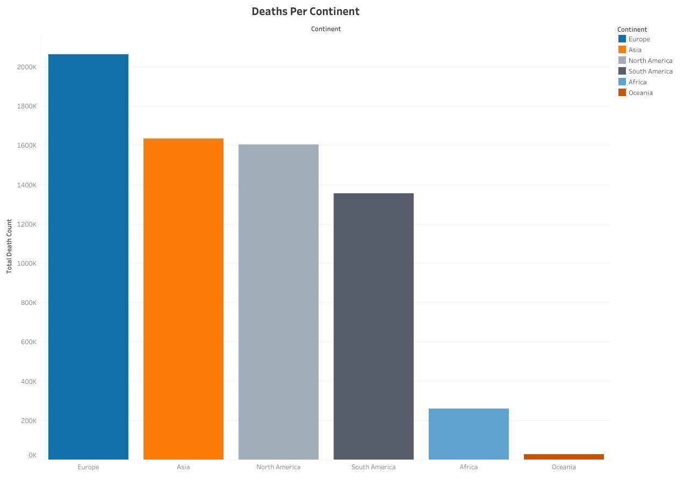

Death Rate
Case Study
Overview
This study embarked on an exhaustive exploration into the myriad facets of Data Analytics, seamlessly integrating tools like Microsoft Excel for data preprocessing, SQL for intricate data querying, and Tableau for advanced visualization techniques.
Scope:
The focus zeroes in on the fluctuating death rates due to Covid-19, starting from its outbreak until the initial months of 2023. This timeline not only offers an insight into the initial shockwaves that the pandemic sent across the globe but also illustrates the evolving nature of the disease and the global response over time.
Methodology:
Following data comprehension and a multitude of exploratory analytics methods, concentration is set on four pivotal topics. These topics were specifically chosen based on their potential to provide illuminating insights, shedding light on patterns, anomalies, and correlations that might otherwise remain concealed.
Key Deliverable:
In order to make this data easily understood Tableau is used for visualization. By visualizing the data in an interactive and engaging format, we can provide a more profound underlying narratives and findings.
Analytics
-- 1.
SELECT Location, SUM(CAST(Total_deaths AS SIGNED)) AS TotalDeathCount
FROM ...coviddeaths
WHERE continent = ('')
AND location NOT IN ('European Union')
AND location NOT LIKE ('%income')
GROUP BY Location
ORDER BY TotalDeathCount DESC;
-- 2.
SELECT Location, Population,
MAX(total_cases) AS HighestInfectionCount,
Max((total_cases/population))*100 AS PercentPopulationInfected
FROM ...coviddeaths
WHERE continent = ('')
AND location NOT IN ('European Union')
AND location NOT LIKE ('%income')
GROUP BY Location, Population
ORDER BY PercentPopulationInfected DESC;
-- 3.
SELECT Location, Population, date,
MAX(total_cases) AS HighestInfectionCount,
Max(total_cases/population) AS PercentPopulationInfected
FROM ...coviddeaths
GROUP BY Location, Population, Date
ORDER BY PercentPopulationInfected DESC;
Visuals
Created through Tableau.
- Continental Death
-

The graph indicates that Europe has the highest death count from the start of the infection up to early 2013, with an outstanding 2 million cases. As the scale moves down you are able to identify where other areas of the world compare.
- Global Infection
-
As the maps shading transitions from a dark blue to a dark red you are able to see specifically where the cases are at its peak with the worst areas being the darkest shade of red.
- Infection Change
-

As cases flexuated between the countries you can see, quarterly, where one country may have increased in known cases where as others may have declined if not maintained a control of the death cases they experienced.
Full Dataset Analysis and Process
Additional Information
Skills Used:
Helpful Resources
siting the sources
Training
Data Analytics training and guidance provided by Alex The Analyst along with data provided by Our World in Data